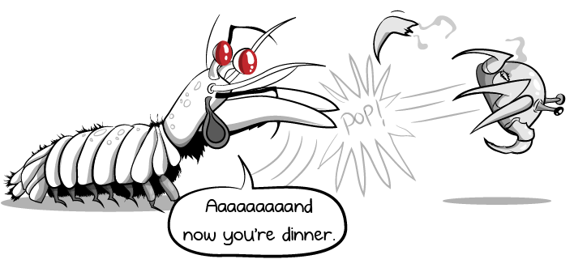

Fatos sobre o Stomatopoda

O Stomatopoda consegue ver até 16 tons de cores, eles tem dois apêndices na frente do seu corpo que aceleram na mesma velocidade que o tiro de uma arma.
Onde elas ficam?

O Odontodactylus scyllarus (Nome cientifico para o Stomatopoda) geralmente é encontrado nas costas das mares tropicais e subtropicais.
Do que eles se alimentam?
São animais exclusivamente carnívoros, eles se alimentam de camarões, caranguejos, moluscos, peixes e até mesmo outros da mesma espécie.